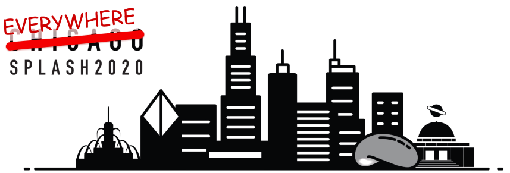

<?xml version="1.0" encoding="UTF-8"?>
<!DOCTYPE html PUBLIC "-//W3C//DTD XHTML 1.0 Strict//EN" "http://www.w3.org/TR/xhtml1/DTD/xhtml1-strict.dtd">
<html lang="en" xml:lang="en" xmlns="http://www.w3.org/1999/xhtml">
<head>

<!-- BEGIN AUTO GENERATED HEADER -->
  <title>Dynamic Languages Symposium (HPI) - DLS-20</title>
  <link rel="stylesheet" type="text/css" href="../styles/style.css" media="screen" />
  <link rel="stylesheet" type ="text/css" href="../styles/print.css" media="print" />
  <link rel="icon" href="../styles/favicon.ico" type="image/ico" />
  <link rel="shortcut_icon" href="../styles/favicon.ico" />
  <script type="text/javascript" src="../scripts/external.js" ></script>
  <script type="text/javascript" src="../scripts/decodemail.js" ></script>
<!-- END AUTO GENERATED HEADER -->

</head>
<body>

<!-- BEGIN AUTO GENERATED NAVIGATION -->
<!-- -=-=-=-=-=-=-=-=-=-= NAVIGATION/1 -=-=-=-=-=-=-=-=-=-= -->
<div class="navigation">
  <div class="logo1"><a class="plain" href="http://www.dynamic-languages-symposium.org/" rel="external">
    
  </a></div>
  <div><a class="plain" href="../index.html">DLS</a></div>
  <div><a class="plain" href="../dls-22/index.html">DLS-22</a></div>
  <div><a class="plain" href="../dls-21/index.html">DLS-21</a></div>
  <div><a class="plain current" href="../dls-20/index.html">DLS-20</a></div>
  <div class="submenu">
    <div><a class="plain" href="../dls-20/program/index.html">Program</a></div>
    <div><a class="plain" href="../dls-20/cfp/index.html">Call for papers</a></div>
  </div>
  <div><a class="plain" href="../dls-19/index.html">DLS-19</a></div>
  <div><a class="plain" href="../dls-18/index.html">DLS-18</a></div>
  <div><a class="plain" href="../dls-17/index.html">DLS-17</a></div>
  <div><a class="plain" href="../dls-16/index.html">DLS-16</a></div>
  <div><a class="plain" href="../dls-15/index.html">DLS-15</a></div>
  <div><a class="plain" href="../dls-14/index.html">DLS-14</a></div>
  <div><a class="plain" href="../dls-13/index.html">DLS-13</a></div>
  <div><a class="plain" href="../dls-12/index.html">DLS-12</a></div>
  <div><a class="plain" href="../dls-11/index.html">DLS-11</a></div>
  <div><a class="plain" href="../dls-10/index.html">DLS-10</a></div>
  <div><a class="plain" href="../dls-09/index.html">DLS-09</a></div>
  <div><a class="plain" href="../dls-08/index.html">DLS-08</a></div>
  <div><a class="plain" href="../dls-07/index.html">DLS-07</a></div>
  <div><a class="plain" href="../dls-06/index.html">DLS-06</a></div>
  <div><a class="plain" href="../dls-05/index.html">DLS-05</a></div>
  <div><a class="plain" href="../imprint/index.html">Imprint</a></div>
</div>
<!-- -=-=-=-=-=-=-=-=-=-= BANNER -=-=-=-=-=-=-=-=-=-= -->
<div class="banner">
  <div class="banner3">Dynamic Languages Symposium (DLS)</div>
</div>

<!-- END AUTO GENERATED NAVIGATION -->

<!-- -=-=-=-=-=-=-=-=-=-= CONTENT -=-=-=-=-=-=-=-=-=-= -->

<h1> <span class="title"> Dynamic Languages Symposium 2020&nbsp;&nbsp;<a class="plain" href="http://2020.splashcon.org/" rel="external"></a> </span> </h1>

<p> <span class="strong"> Co-located with <a href="http://2020.splashcon.org/" rel="external">SPLASH 2020</a> </span> </p>

<p> <span class="strong"> In association with <a href="http://www.sigplan.org/" rel="external">ACM SIGPLAN</a> </span> </p>

<p> <span style="text-decoration:line-through;">Chicago, Illinois, USA</span> Everywhere, Nov 18, 2020 </p>

<p> <a href="http://2020.splashcon.org/track/dls-2020/" rel="external">2020.splashcon.org/track/dls-2020</a>
<br/> http://www.dynamic-languages-symposium.org/dls-20/ </p>

<!-- -=-=-=-=-=-=-=-=-=-=-=-=-=-=-=-=-=-=-=-=-=-=-=-=-=-=-=-=-=-= -->

<div class="important">
<!--
><ul>
  <li> DSL is a one-day event. Participants who want to attend <span class="paper-title"> DLS only </span> need to obtain a one-day OOPSLA registration. </li>
</ul>
-->

<ul>
  <li> Most Notable Paper Award 2020 for 2010
    <ul>
      <li> Recipients: Tom Van Cutsem and Mark S. Miller </li>
      <li> Title: Proxies: Design Principles for Robust Object-oriented Intercession APIs </li>
      <li> Conference: DLS 2010 </li>
      <li> Paper: <a href="https://dl.acm.org/doi/10.1145/1869631.1869638"
           rel="external">https://dl.acm.org/doi/10.1145/1869631.1869638</a> </li>
      <li> Citation: The 2010 DLS paper “Proxies: Design Principles for Robust Object-oriented Intercession APIs” is a
        prime example of the object-capability model. In short order, it managed to bridge the gap from
        research to become an integral part of an important language today. </li>
      <li> Certificate: <a href="../media/dls2020mnp2010.pdf" rel="external">pdf</a> </li>
    </ul>
  </li>
  <li> DLS 2020 papers available for download from
       the <a href="https://dl.acm.org/doi/proceedings/10.1145/3426422"
       rel="external">ACM Digital Library</a>! </li>
</ul>
</div>

<p>Welcome to the the 16<sup>th</sup> edition of the Dynamic Language Symposium (DLS),
  co-located with SPLASH 2020 online.</p>
<p>DLS is the premier forum for researchers and practitioners to share research
results and experience on all aspects on dynamic languages—by which we mean
languages like Clojure, Dart, Elixer, Erlang, JavaScript, Julia, Lisp, Lua, Perl, Python,
Ruby, R, Racket, Scheme, Smalltalk, and more. As demonstrated again by this
year’s program, the inuence of work in these languages extends beyond the
implementation and direct use of dynamic languages.</p>
<p>This year, we received fourteen submissions reporting original research and
  experience related to the design, implementation, and applications of dynamic
  languages. Nine of those papers have been accepted to symposium.</p>
<p>As in previous years, reviewing proceeded in two rounds. The rst round
  followed a lightweight double-blind process, meaning that author identities were
  not revealed to reviewers until the discussion phase. In the second phase, authors
  rened their submissions to address reviewer concerns, and we believe that this
  resulted in better papers and enabled a more complete dissemination of work on
  dynamic languages</p>
<p>We are very pleased to include in this year’s program a keynote presentation
  by Vanessa Freudenberg:
  <quote>Croquet: A Unique Collaboration Architecture</quote>.
<p>
  Our sincere thanks go to the Program Committee, the SPLASH organization,
  the authors, and the DLS community for all of your eorts toward this year’s
  symposium.
</p>


<p> Matthew Flatt
<br/> DLS 2020 Program Chair
<br/> University of Utah
<br/> USA
</p>

<p> Tim Felgentreff
  <br/> DLS 2021 Steering Committee Chair
  <br/> Oracle Labs Potsdam
  <br/> Germany
  </p>
</div>
	
<!-- -=-=-=-=-=-=-=-=-=-=-=-=-=-=-=-=-=-=-=-=-=-=-=-=-=-=-=-=-=-= -->

<p>
<a class="plain" href="http://www.sigplan.org" rel="external"></a>

&nbsp;&nbsp;

<a class="plain" href="http://www.acm.org/dl/" rel="external"></a>
</p>

<!-- BEGIN AUTO GENERATED FOOTER -->
<!-- -=-=-=-=-=-=-=-=-=-= FOOTER -=-=-=-=-=-=-=-=-=-= -->
  <div class="copyright">
  <p> &copy; 2006-2023 <a class="plain" href="http://www.hpi.uni-potsdam.de/swa" rel="external">HPI Software Architecture Group</a> <a class="plain" href="http://validator.w3.org/check/referer" rel="external">&nbsp;&nbsp;&nbsp;&nbsp;</a> </p>
  </div>
<!-- END AUTO GENERATED FOOTER -->

</body>
</html>
<!-- Localized -->
